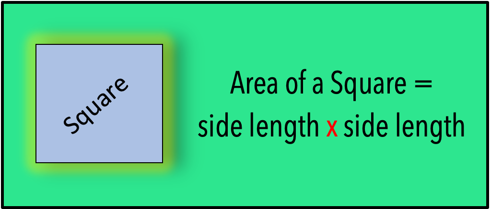
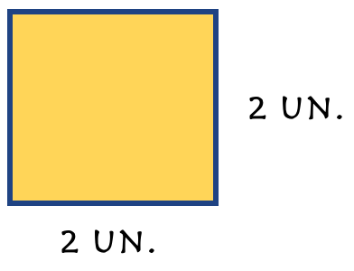
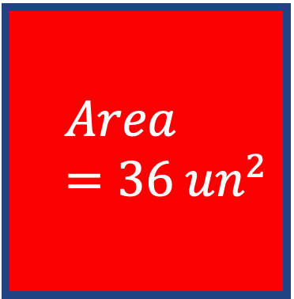
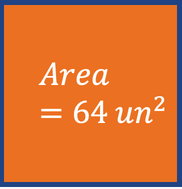
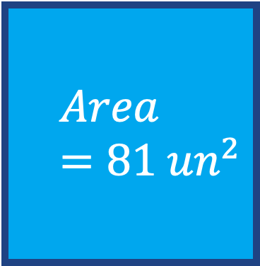
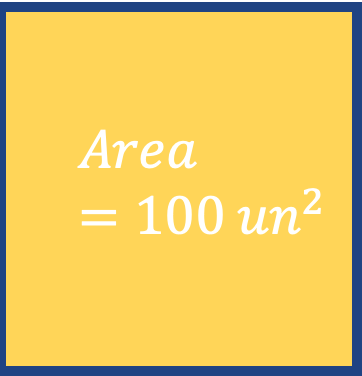
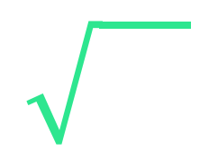

Before we begin working with square roots and adding, subtracting, and multiplying them, I think it is important to do a brief recall of the meaning, vocabulary, and basic information regarding square roots and where they come from.
In order for us to do that, we can quickly review the topics:
What are square roots?
Where do they come from?
How do I work with them in calculations?
In the multiplication table, notice that when the same two numbers get multiplied together, the answers to each one forms a diagonal line from the top-left corner to the bottom right corner.
The second image shows the "Perfect Square" values highlighted in red.
These highlighted values are called "Perfect Squares" and have a literal connection to Geometry and finding the Area of a Square.
Understanding this connection is extremely important in making square root operations easy for you.

Given each square below, calculate its area. Then, type it into the boxes for each problem to check your answer.
Example 1: 
Hopefully the above section was easy for you. If not, just keep practing finding the area of different squares and you will have it memorized in no time!
Now, let's talk about the definition of what a "Square Root" is.
When you were finding the area of each square, you were multiplying the same number by itself twice. This is called "Squaring" a number.
For example, for a square with side lengths = 5 units, its area is 5 x 5 which using exponents can be written as 52. Pronounced "five to the second power" or "five squared". We have a square with side lengths of 5.
So a "Square Root" is a mathematical symbol that asks you to reverse the process we just did when finding the area.
Looking at each square, the Area of the Square is given. Use your multiplication tables (above) or mental math to determine the side lengths of each square.
Then click on the Answer button to see the answer to each problem.




The process of calculating the side lengths of a square when given its area, is referred to as taking the "Square Root" of the number.
The math symbol for the square root is:

Rather then have to explain to you the thought process we used above each time they want you calculate the side lengths of a square given its area, they will just say "Find the Square Root" of the number.
The other issue is they typically don't give you a picture of the square. They only give you the square's area and ask you to find the lengths of its sides. Again, called taking the "Square Root" of the value. You can draw squares on your paper to help you visualize what you are calculating.
Calculate the Square Root of the values. Check your answers when done.
| √36 | √64 | √16 | √81 | √100 |
| √1 | √4 | √121 | √9 | √25 |
| √0 | √169 | √81 | √400 | √225 |